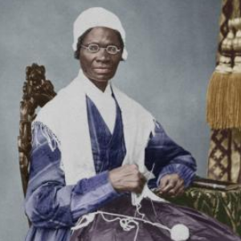

Sojourner Truth was an African American evangelist, abolitionist, women's rights activist and author who was born into slavery.
She escaped into freedom in 1826, after she gained her freedom, she preached about abolitionism and equal rights for all.
She became known for a speech with the famous refrain, "Ain't I a Woman." That she was said to have delivered at a women's convention in Ohio in 1851.
Although accounts of that speech (and whether truth ever used that refrain) have since been challenged by historians. Truth continued her crusade throughout her adult life, earning an audience with president Abraham Lincoln and becoming one of the worlds best known human rights crusaders.
NWHM CC License - Public domain
Information from History.com
Home